QA de la app — estado actual de master
Recorrido completo de los 4 módulos, la autenticación, los ajustes y el paywall, con captura de cada pantalla y de sus estados (cargando, vacío, error, límite, Pro, modo noche).
QA_HARNESS=1 npx expo start --web) y se recorrió pantalla por pantalla.
Como master no arranca sin credenciales de Clerk y Convex
(app/_layout.tsx y src/lib/convexClient.ts tiran error en el import),
se montó un harness que sustituye solo los SDK externos por mocks
(qa-harness/, ver su README). El código de las pantallas es el real, sin tocar;
también son reales los catálogos de Voces e Historias. Lo que es de mentira: el texto bíblico,
las respuestas de IA y las ilustraciones de las historias.
Resumen ejecutivo
La app está entera y se ve como el prototipo. Los 4 módulos (Devocional, Pregunta al texto, Voces, Historias), el onboarding, los ajustes, el historial y el paywall existen, navegan y renderizan con los tokens de design/tokens.json. 175 tests en verde, tsc --noEmit limpio.
Hay un agujero de navegación serio. app/(tabs)/ no tiene _layout.tsx, o sea que no existe la barra de tabs: Home es el único punto de entrada a los 4 módulos. Y Home esconde la grilla de módulos cuando está activo el modo noche suave. Con modo noche encendido, un usuario ya no puede llegar a Pregunta al texto, Voces ni Historias desde ningún lado (A1).
Los transversales no están unificados como pide la regla dura #3. Sentimiento y Voces usan LimitReached; Q&A tiene una copia local de esa pantalla con copy distinto; Historias ni siquiera muestra pantalla de límite, salta directo al paywall. Son 3 comportamientos para el mismo momento del funnel (A2, A3).
Convex está tirando un warning real en cada arranque: módulos de servidor entran al bundle del cliente vía src/lib/limitCopy.ts → convex/quotas.ts → convex/devotional.ts. Convex avisa que eso va a tirar error en versiones futuras (A4).
NVI se puede elegir en Ajustes pero no tiene corpus ingerido, así que el versículo del día se queda sin texto y el selector de versículos queda vacío (A5). El historial es una pantalla de solo lectura: las filas no son tocables, no se puede reabrir ninguna conversación (A6).
Mapa de rutas
| Ruta | Archivo | Qué hace | Cómo se llega |
|---|---|---|---|
/ | app/index.tsx | Redirige a /home o /splash según sesión | arranque |
/splash | app/splash.tsx | Marca + "Toca para entrar" | sin sesión |
/login | app/(auth)/login.tsx | Google, Apple o correo | desde splash |
/email | app/(auth)/email.tsx | Código de 6 dígitos (sign-in o sign-up) | desde login |
/onboarding | app/(auth)/onboarding.tsx | 3 pasos de valor + "Saltar" | tras autenticarse |
/notifications | app/(auth)/notifications.tsx | Elegir hora del recordatorio | fin del onboarding |
/home | app/(tabs)/home.tsx | Devocional del día + accesos a los módulos | raíz autenticada |
/sentir | app/(tabs)/sentir.tsx | Devocional por sentimiento + historial propio | tarjeta "¿Cómo estás hoy?" |
/preguntar | app/(tabs)/preguntar.tsx | Selector libro → capítulo → versículo | grilla de Home |
/preguntar/chat | app/(tabs)/preguntar/chat.tsx | Q&A con cita RVR1960 | desde el selector |
/voces | app/(tabs)/voces.tsx | Lista de 6 personajes humanos | grilla de Home |
/voces/[slug] | app/(tabs)/voces/[slug].tsx | Chat en 1ra persona + sugerencias | desde la lista |
/historias | app/(tabs)/historias.tsx | Catálogo de 5 historias | grilla de Home |
/historias/[storyId] | app/(tabs)/historias/[storyId].tsx | Visor de 4 paneles ilustrados | desde el catálogo |
/ajustes | app/ajustes.tsx | Plan, versión, modo noche, recordatorio, privacidad | engranaje en Home |
/historial | app/historial.tsx | Lista de conversaciones | Ajustes → Mis conversaciones |
/paywall | app/paywall.tsx | $4.99/mes, comprar y restaurar | límites y tarjeta de plan |
Flujos, paso a paso
1 · Entrar y onboarding
/splash → /login → /email → /onboarding ×3 → /notifications → /home
- 1Abrir la app sin sesiónSe ve: Splash con la marca y la bajada TU FE. TUS PREGUNTAS. SU PALABRA.
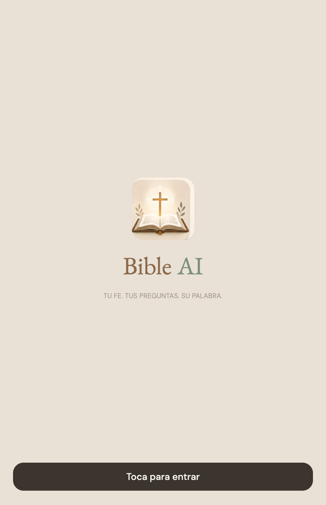
01-splash.png - 2Tocar «Toca para entrar»Se ve: Login con Google, Apple y «Usar mi correo». Aviso legal al pie.
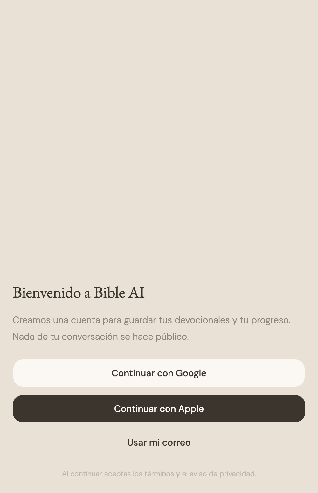
02-login.png - 3Tocar «Usar mi correo»Se ve: Campo de correo con autofocus; el CTA arranca deshabilitado hasta escribir.
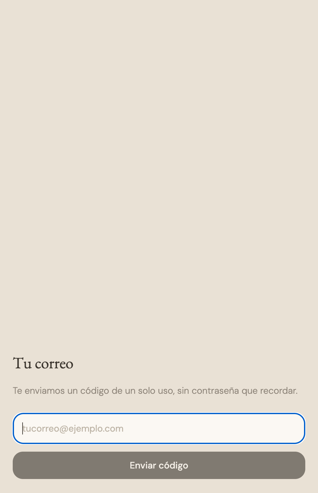
03-email.png - 4Escribir el correo y enviarSe ve: Pasa al paso de código: «Revisá tu correo», input de 6 dígitos y «Usar otro correo».El copy acá vosea («Revisá», «Escribí») mientras el resto de la app tutea. Ver B8.
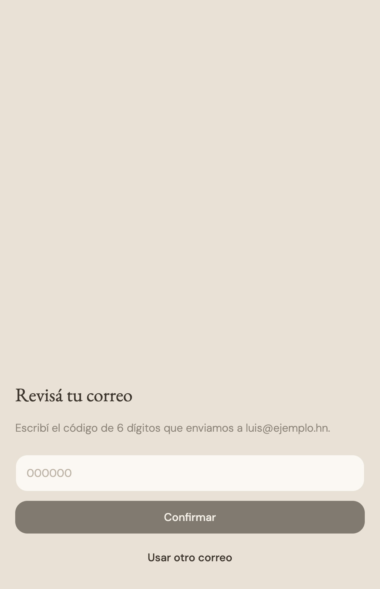
04-email-codigo.png - 5Confirmar el códigoSe ve: Onboarding paso 1 de 3: «Un lugar tranquilo para leer».
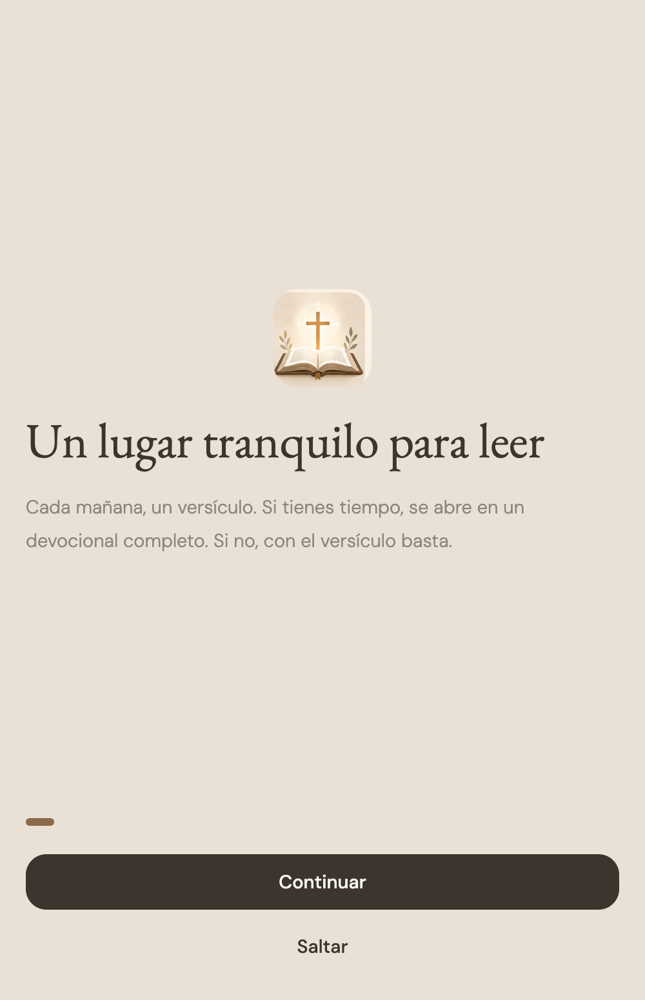
05-onboarding-1.png - 6ContinuarSe ve: Paso 2: «Pregunta lo que no te atreves a preguntar».
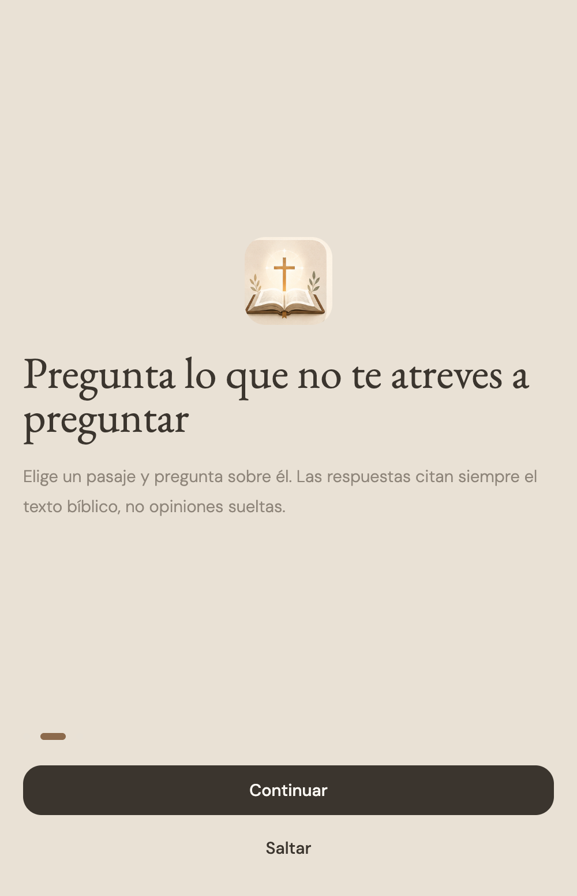
06-onboarding-2.png - 7ContinuarSe ve: Paso 3: privacidad. El CTA cambia a «Empezar».
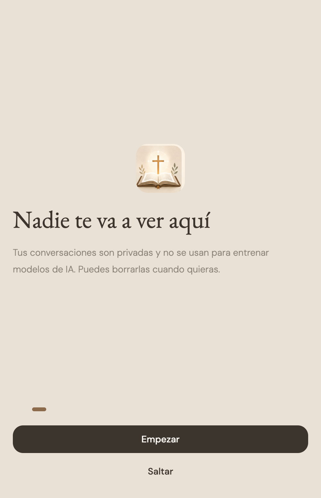
07-onboarding-3.png - 8EmpezarSe ve: Selector de hora del recordatorio: 6:00, 12:00, 21:00. Preseleccionada 6:00.
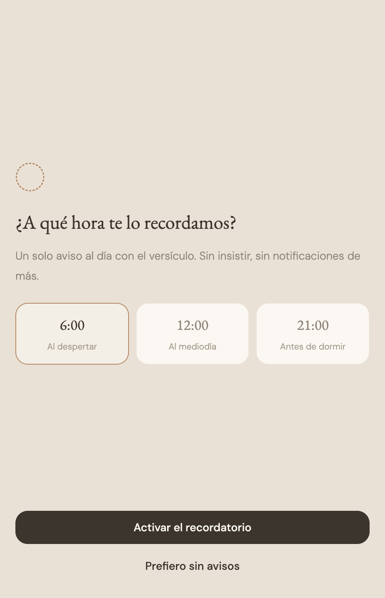
08-notificaciones.png - 9Activar el recordatorio (en navegador)Se ve: «Los recordatorios se activan desde la app en tu teléfono». Es el camino correcto de
dailyReminder.tsen web.El mensaje reemplaza a la descripción en el mismo lugar; no hay un bloque de error diferenciado.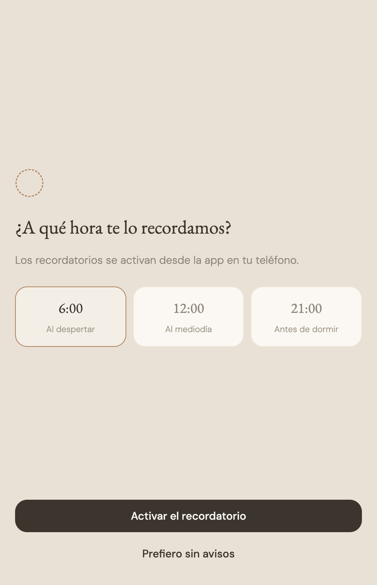
09-notificaciones-web-unsupported.png - 10«Prefiero sin avisos»Se ve: Cae en Home con el devocional del día ya cargado.
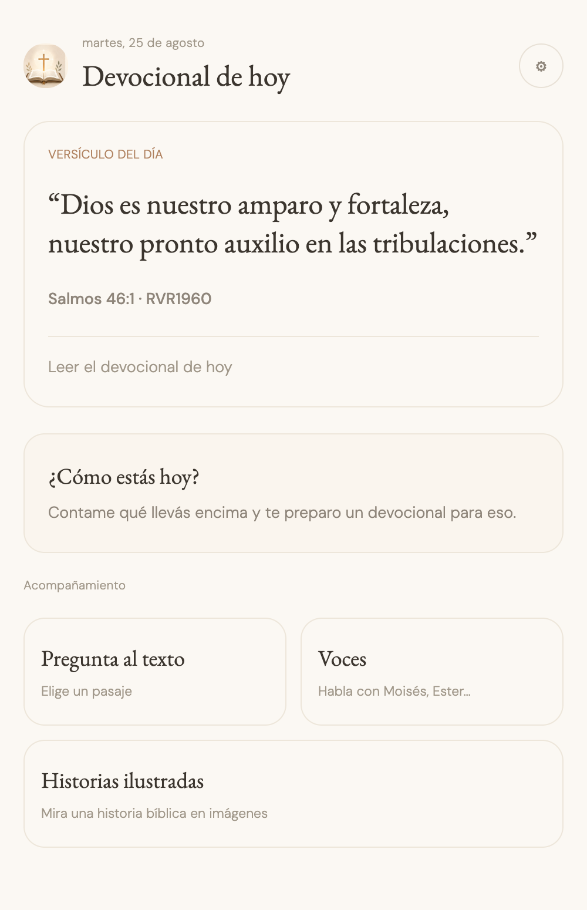
10-home.png
{kind=link}
{kind=link}
{kind=link}
{kind=link}
{kind=link}
{kind=link}
{kind=link}
{kind=link}
{kind=link}
{kind=link}
2 · Devocional diario (Home)
/home — estados: normal, expandido, error, modo noche, NVI
- 1Ver HomeSe ve: Fecha en español de Honduras, versículo del día citado con versión, tarjeta «¿Cómo estás hoy?» y grilla «Acompañamiento» con los 3 módulos.
10-home.png - 2Tocar la tarjeta del versículoSe ve: Se abre el devocional completo: imagen, reflexión y «Compartir por WhatsApp».El botón dice WhatsApp pero
shareContentabre el share sheet genérico de RN (Share.share). Ver B14.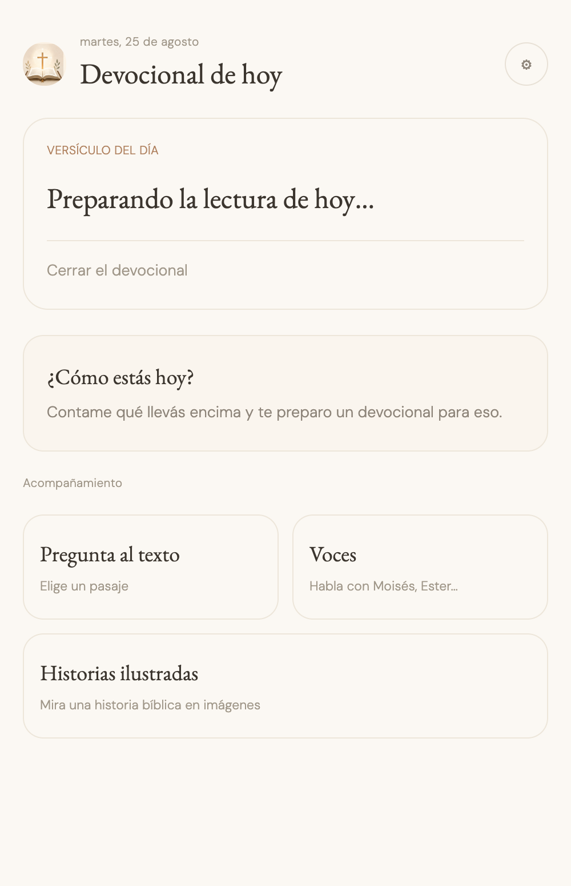
11-home-devocional-abierto.png - 3Activar «Modo noche suave» en Ajustes y volverSe ve: El tema oscuro se aplica bien, pero desaparecen «Acompañamiento» y las 3 tarjetas de módulo. Solo queda el devocional y Sentimiento.A1 — sin barra de tabs, esto deja Q&A, Voces e Historias inalcanzables.
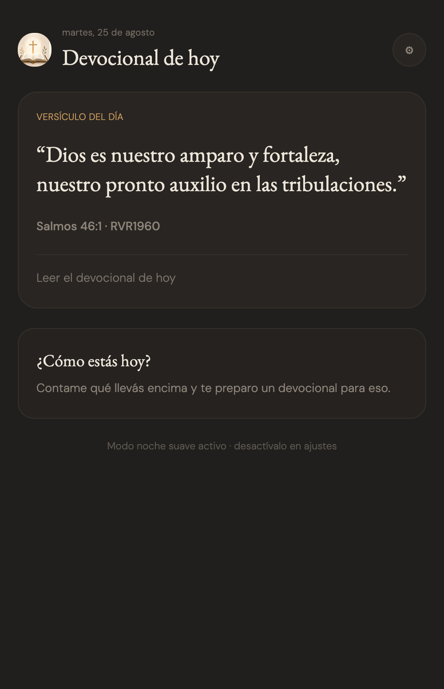
12-home-modo-noche.png - 4Simular que
devotional:todayfallaSe ve: «No pudimos preparar tu lectura. Tocá para intentarlo de nuevo.» El tap reintenta.La línea de abajo sigue diciendo «Leer el devocional de hoy» en vez de «Reintentar». Ver B7.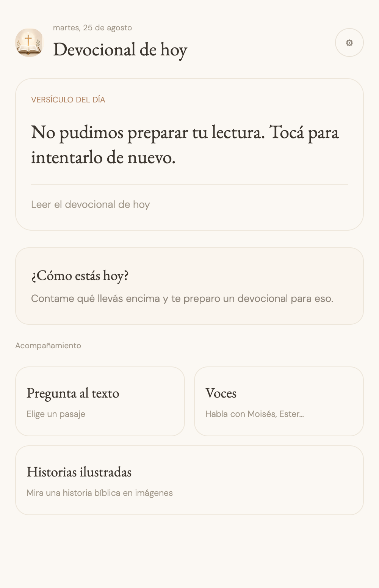
13-home-error-devocional.png - 5Elegir NVI en Ajustes y volver a HomeSe ve: La tarjeta muestra solo «Salmos 46:1 / NVI». Sin texto del versículo.A5 — NVI no tiene corpus ingerido; el fallback es correcto en el código pero el resultado para el usuario es una tarjeta vacía.
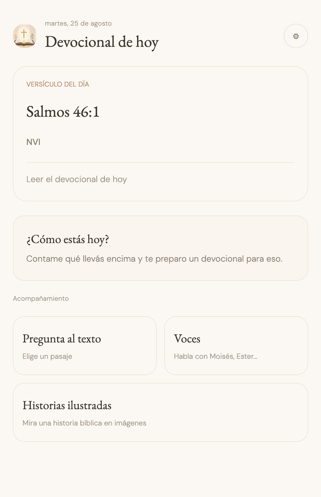
37-home-nvi-sin-texto.png
{kind=link}
{kind=link}
{kind=link}
{kind=link}
3 · Pregunta al texto (Q&A + RAG)
/preguntar → /preguntar/chat — estados: libre, con pasaje, enviando, límite, Pro
- 1Abrir «Pregunta al texto»Se ve: Los 66 libros del canon protestante con su cantidad de capítulos.Sin buscador ni separación AT/NT, y el atajo «Prefiero preguntar directo» queda al final de las 66 filas. Ver B1.
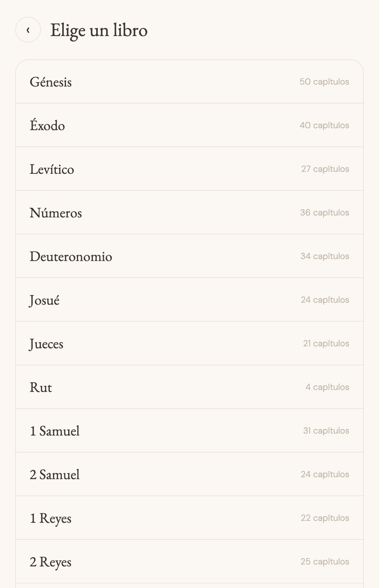
14-preguntar-libros.png - 2Elegir SalmosSe ve: Grilla de 150 capítulos.El encabezado dice solo «Elige un capítulo»; no recuerda que el libro es Salmos. Ver B2.
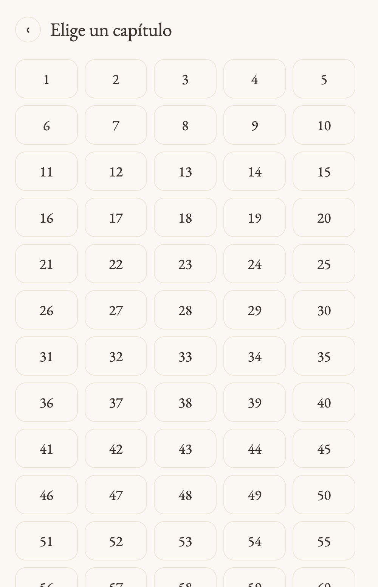
15-preguntar-capitulos.png - 3Elegir el capítulo 46Se ve: Versículos indexados del capítulo + CTA «Preguntar sobre Salmos 46».
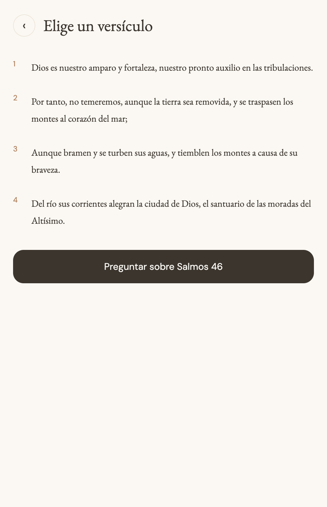
16-preguntar-versiculos.png - 4Tocar el versículo 1Se ve: Chat con contexto «Salmos 46:1», contador «4 de 5 preguntas gratis hoy», respuesta con cita al pie y «Compartir esta respuesta».
17-preguntar-chat.png - 5Escribir una pregunta y enviarSe ve: Aparece «Buscando en el texto…» — pero la pregunta recién enviada no se ve en el hilo hasta que llega la respuesta.M2 — el usuario ve su pregunta desaparecer del input sin eco en la conversación.
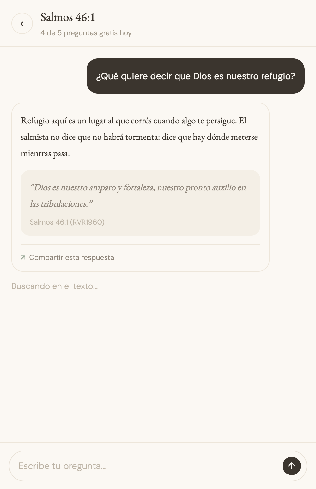
18-preguntar-chat-enviando.png - 6Esperar la respuestaSe ve: El par pregunta/respuesta aparece completo, con su cita.
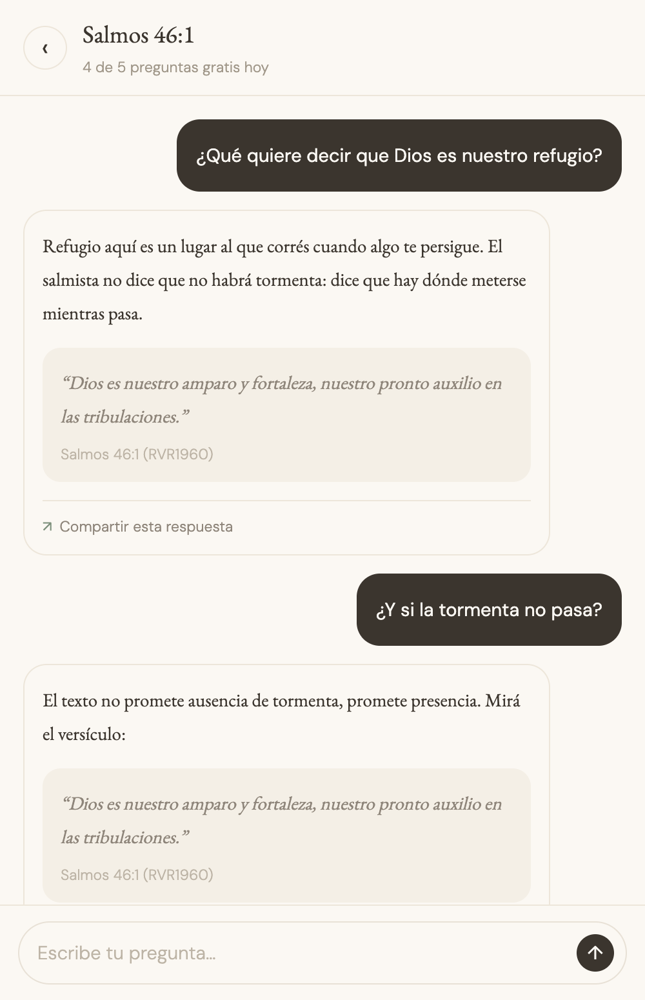
19-preguntar-chat-respuesta.png - 7Entrar con la cuota agotadaSe ve: «Por hoy llegaste al límite. Usaste tus 5 preguntas gratis de hoy. Vuelven mañana a las 6:00 a.m.»A3 — pantalla local, no el componente compartido; y le falta la coletilla «y el devocional del día sigue abierto para ti» que sí tienen Voces y Sentimiento.
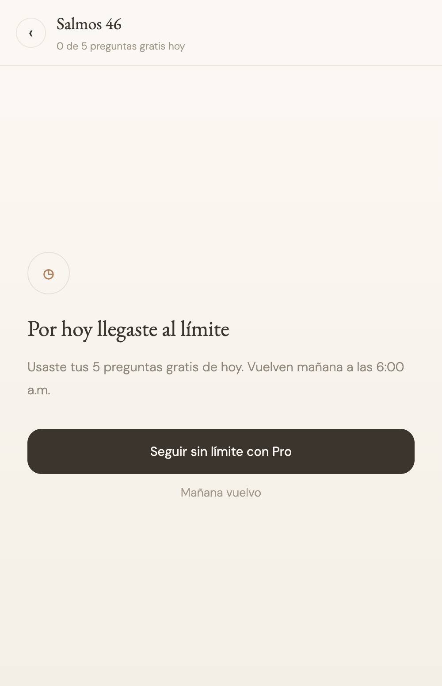
20-preguntar-limite.png - 8Entrar como ProSe ve: El contador cambia a «Pro · sin límite» y no hay corte.
42-preguntar-pro.png - 9Entrar sin elegir pasajeSe ve: Contexto «Pregunta libre» y estado vacío que explica que toda respuesta cita un versículo.
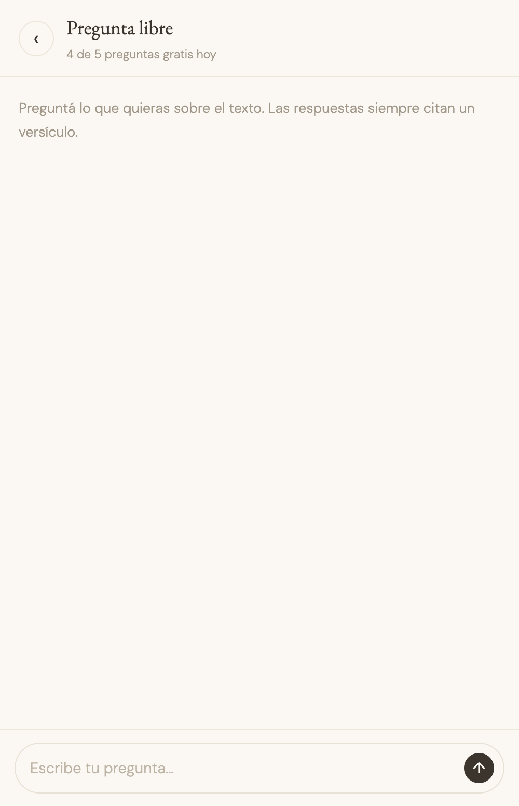
43-preguntar-libre-vacio.png - 10Con NVI seleccionada, abrir Salmos 46Se ve: «Todavía no tenemos versículos indexados de Salmos 46. Podés preguntar sobre el capítulo igual.»A5 — el capítulo entero queda sin versículos porque solo RVR1960 está ingerido.
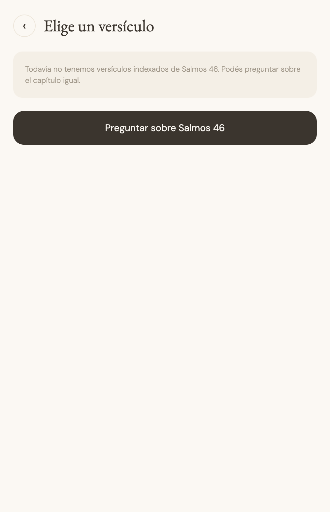
38-preguntar-nvi-vacio.png
{kind=link}
{kind=link}
{kind=link}
{kind=link}
{kind=link}
{kind=link}
{kind=link}
{kind=link}
{kind=link}
{kind=link}
4 · Voces (chat en 1ra persona)
/voces → /voces/[slug] — incluye la verificación de la regla dura #2
- 1Abrir VocesSe ve: 6 personajes humanos (Moisés, David, Ester, Pablo, Rut, Elías) y el aviso explícito de que de Dios, Jesús y el Espíritu Santo se habla en 3ra persona.Los avatares son círculos con degradé y la inicial; el PRD §4.3 pide «un avatar/ilustración visual propio». Ver M6.
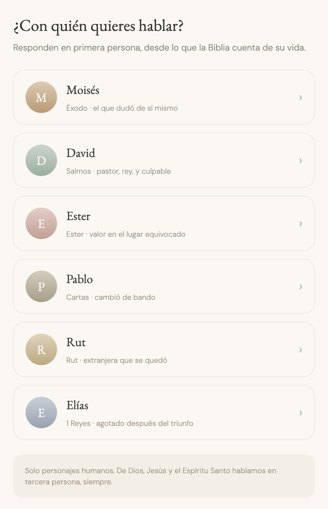
21-voces-lista.png - 2Abrir MoisésSe ve: Mensaje de apertura en 1ra persona + dos sugerencias de pregunta.El saludo enlatado ya ofrece «Compartir esta respuesta» antes de que exista conversación real. Ver B6.
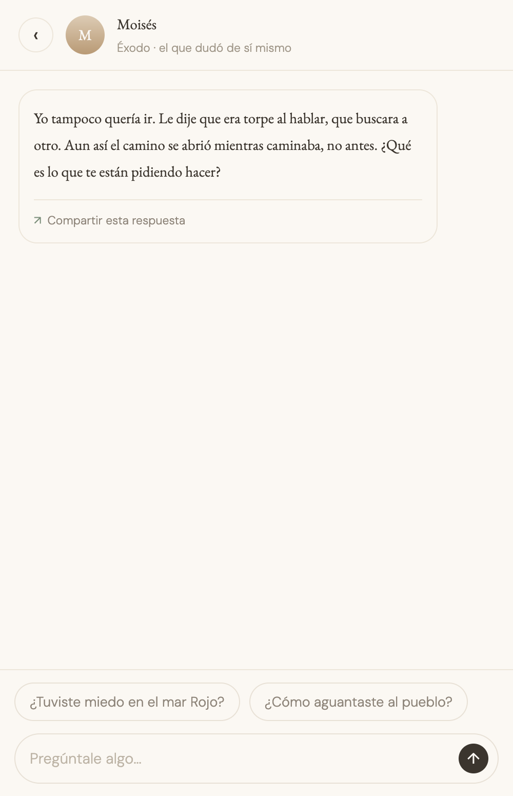
22-voces-chat.png - 3Tocar una sugerenciaSe ve: «Ester está escribiendo…» mientras responde.M2 — igual que en Q&A, la pregunta enviada no aparece en el hilo mientras se espera.
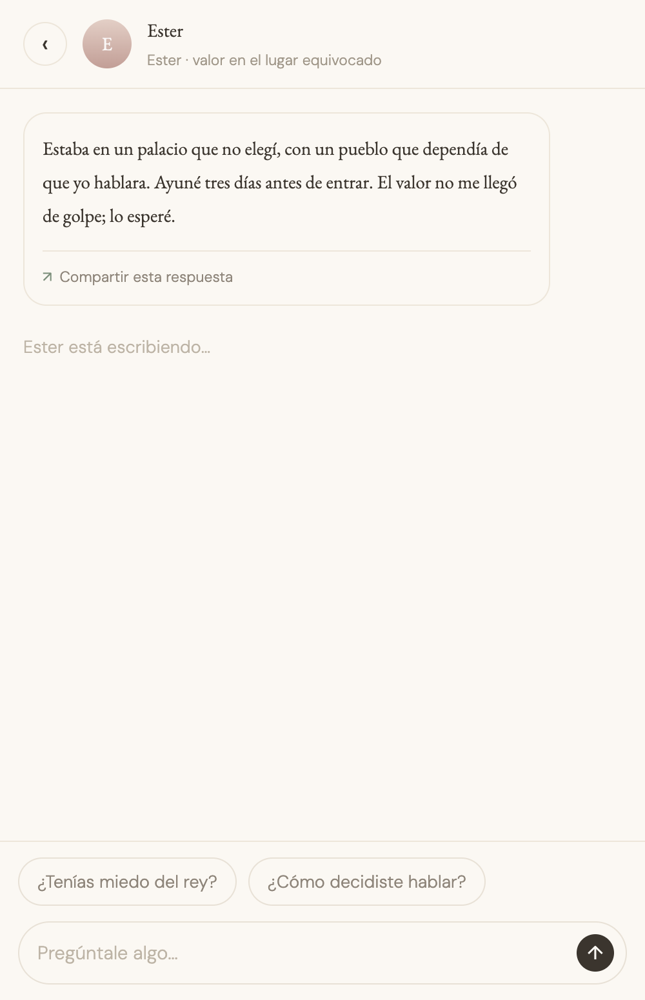
23b-voces-escribiendo.png - 4Ver el hilo con respuestaSe ve: Burbujas usuario/personaje y opción de compartir la respuesta.
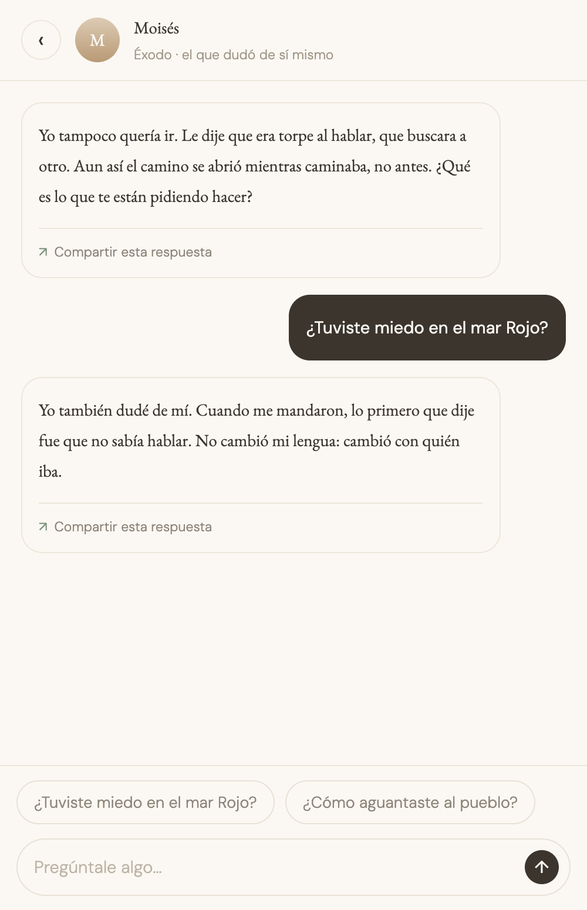
23-voces-chat-respuesta.png - 5Entrar con la cuota agotadaSe ve: Pantalla
LimitReachedcompartida: «Usaste tus 5 conversaciones gratis de hoy. Vuelven mañana a las 6:00 a.m., y el devocional del día sigue abierto para ti.»Comparar con la captura 20: mismo momento, dos copys distintos.24-voces-limite.png - 6Forzar /voces/jesus a manoSe ve: «Ese personaje no está en Voces.» La regla dura #2 se sostiene también en el ruteo.B3 — la pantalla está sin layout: texto pegado a la esquina, sin padding ni estructura de
AppScreen.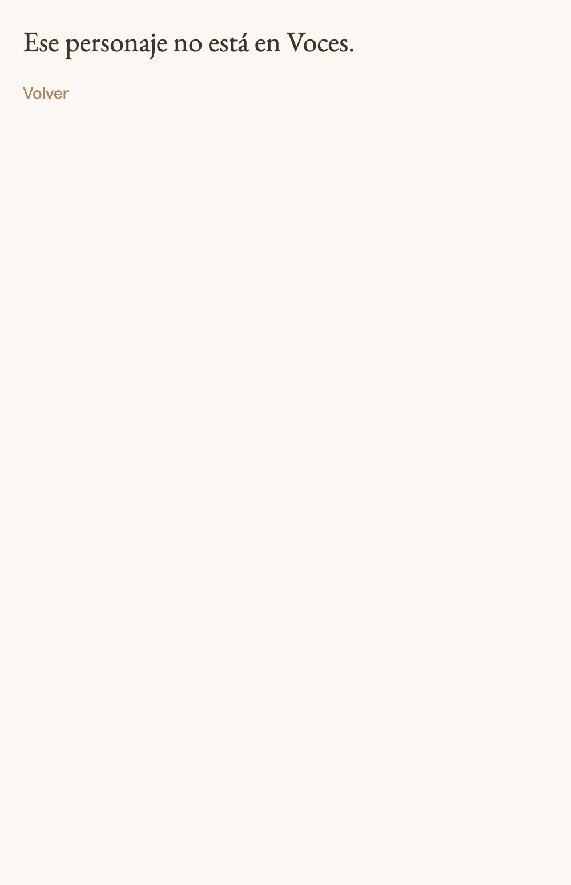
44-voces-personaje-invalido.png - 7Cargar la lista con la query pendienteSe ve: Título y aviso, pero ningún indicador de carga: la lista simplemente no está.B4 — Historias sí muestra «Cargando historias…».
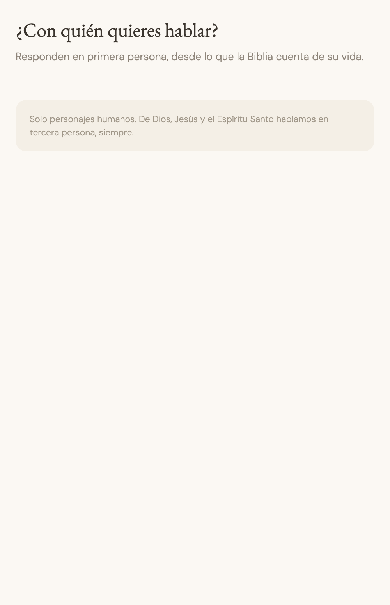
47-voces-cargando-sin-estado.png
{kind=link}
{kind=link}
{kind=link}
{kind=link}
{kind=link}
{kind=link}
{kind=link}
5 · Devocional por sentimiento
/sentir — selección, generación, resultado, historial propio, límite
- 1Abrir «¿Cómo estás hoy?»Se ve: Cuota arriba, 14 chips de sentimiento, campo libre opcional, disclaimer de que no es consejo pastoral, y «LOS DE ANTES» con los devocionales previos.
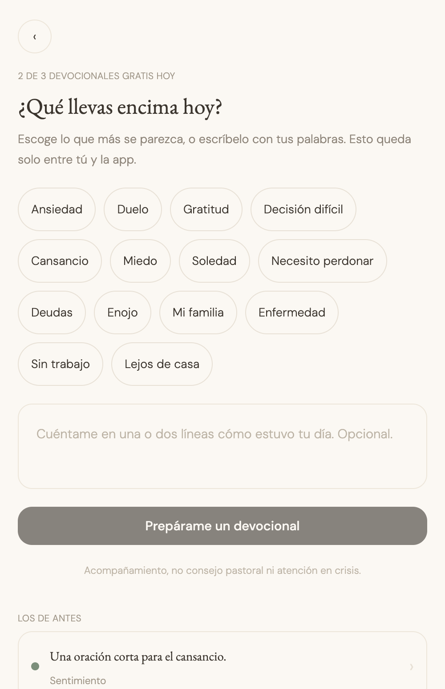
25-sentir.png - 2Elegir un sentimientoSe ve: El chip se marca en oscuro y el CTA se habilita.Deshabilitado, el CTA se ve como un botón primario gris sólido; cuesta distinguir que no se puede tocar. Ver B15.
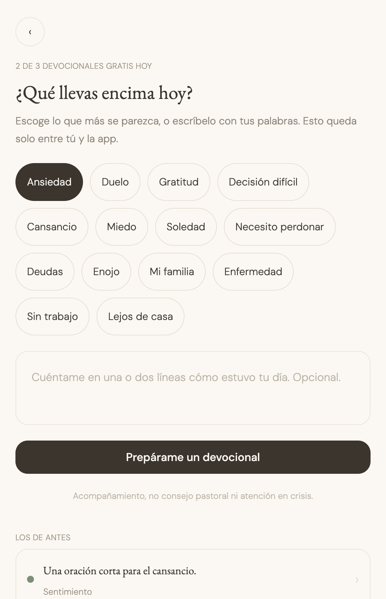
25b-sentir-seleccion.png - 3Tocar «Prepárame un devocional»Se ve: Pantalla de espera: «Buscando un pasaje que hable de esto… Tomá un respiro mientras tanto.»B11 — sin spinner ni forma de volver: el botón de atrás desaparece mientras genera.
26-sentir-generando.png - 4Esperar el resultadoSe ve: Título, versículo citado con versión, reflexión, oración corta, «Dame otro enfoque» y la nota de que es privado.La «imagen» del devocional es un degradé plano, no una ilustración.
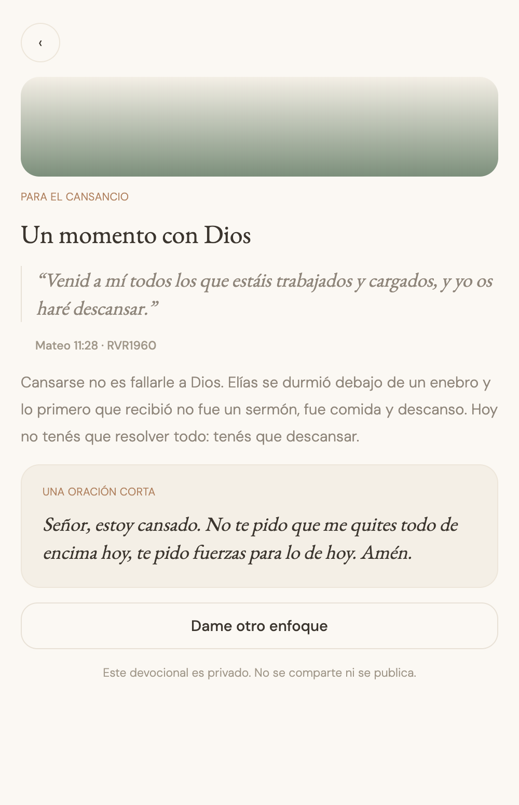
27-sentir-resultado.png - 5Abrir un devocional desde «LOS DE ANTES» y tocar «Dame otro enfoque»Se ve: No pasa nada. El botón no está deshabilitado y no da ninguna señal.M1 —
generateDevotionalsale temprano porquecanGeneratees false (no hay chips ni texto al venir del historial).
28-sentir-historial-dame-otro-enfoque.png - 6Entrar con la cuota agotadaSe ve:
LimitReachedcon la copia de 3 devocionales.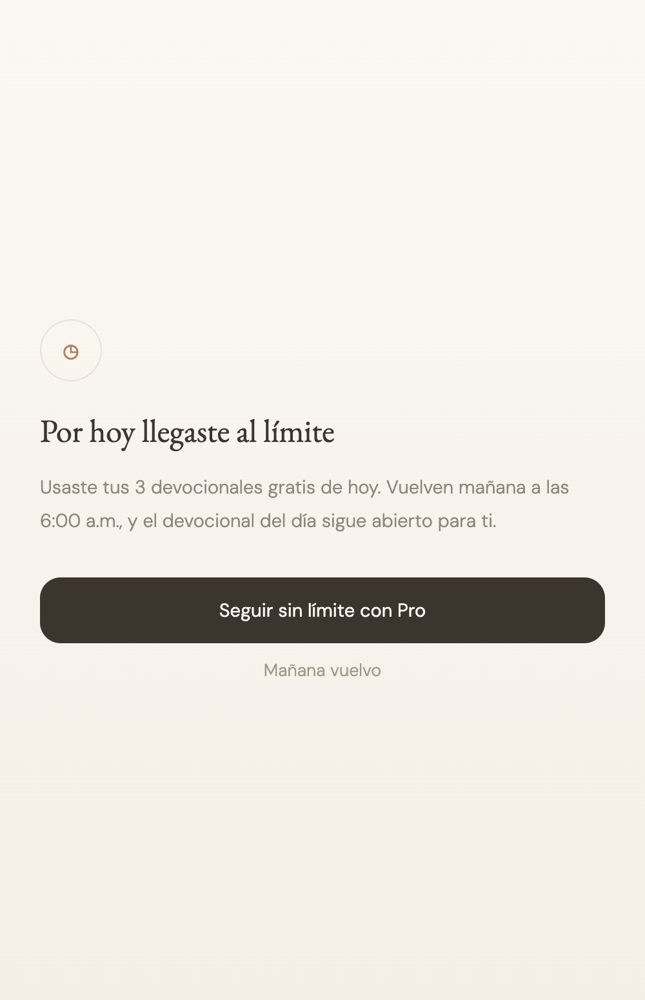
29-sentir-limite.png
{kind=link}
{kind=link}
{kind=link}
{kind=link}
{kind=link}
6 · Historias ilustradas
/historias → /historias/[storyId] — catálogo, visor, estados de imagen, límite
- 1Abrir HistoriasSe ve: 5 historias del catálogo, cada una con referencia y «4 ESCENAS».B12 — miniaturas vacías (rectángulo gris), sin indicador de cuota y sin botón de volver.
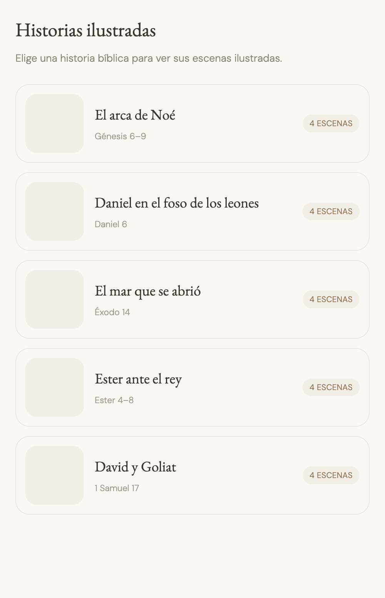
30-historias-catalogo.png - 2Estado de cargaSe ve: «Cargando historias…»
46-historias-cargando.png - 3Tocar «El arca de Noé»Se ve: Se llama a
stories:create, se consume la cuota y se abre el visor con «Compartir esta historia» y los paneles.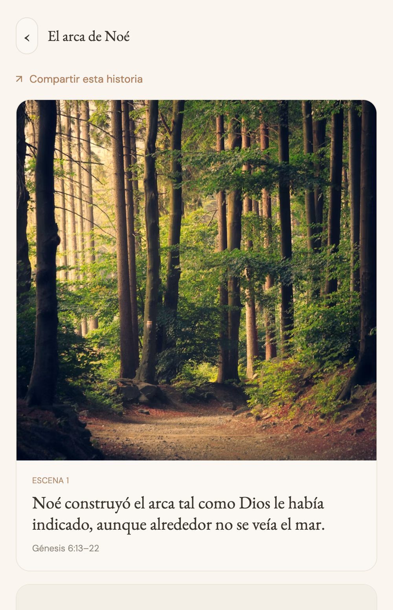
31-historias-visor.png - 4Bajar por los panelesSe ve: Los 3 estados de imagen conviven: lista, «Generando ilustración…» y «Ilustración aún no disponible».M4 — una escena fallida se muestra igual que una pendiente («Aparecerá aquí cuando la generación esté lista») y no hay reintento.
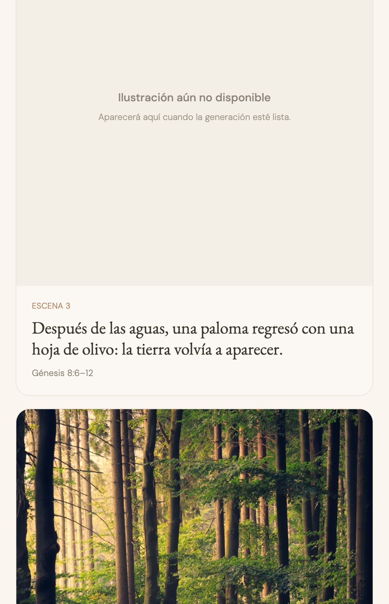
32-historias-escenas-estados.png - 5Tocar una historia con la cuota agotadaSe ve: Salta directo al paywall, sin pasar por la pantalla de límite.A2 — es el único de los 4 módulos que se comporta así.

33-paywall.png - 6Abrir /historias/no-existeSe ve: «Historia no encontrada» con CTA «Volver a historias». Bien construida, con
AppScreen.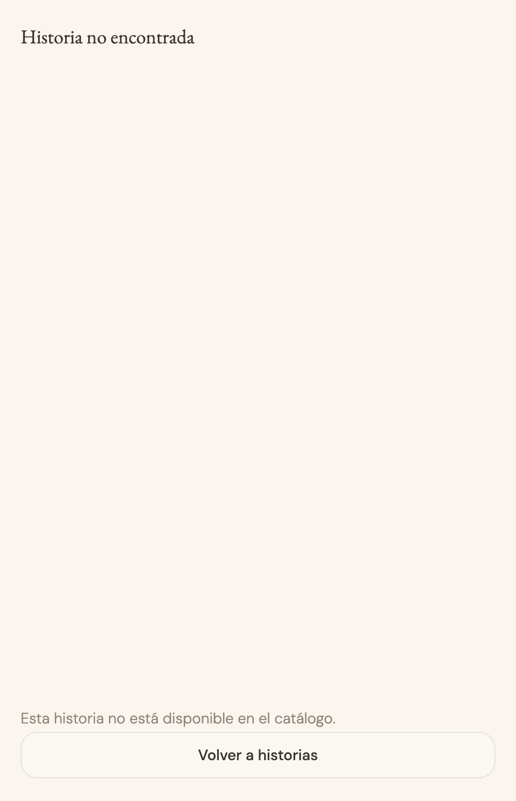
45-historia-no-encontrada.png
{kind=link}
{kind=link}
{kind=link}
{kind=link}
{kind=link}
7 · Ajustes, historial y paywall
/ajustes → /historial · /paywall
- 1Abrir Ajustes desde el engranaje de HomeSe ve: Tarjeta de plan, versión de la Biblia, modo noche, hora del recordatorio, «Mis conversaciones» y borrar historial.M3 — «3 preguntas y 2 devocionales al día» no coincide con
QUOTA_LIMITS(5 y 3). Y falta cerrar sesión (M5).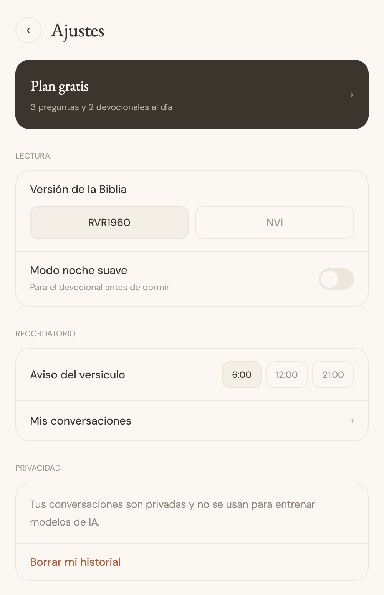
35-ajustes.png - 2Cambiar a NVI y encender modo nocheSe ve: Ambos se aplican al instante en toda la app.B9 — en modo noche la tarjeta «Plan gratis» se invierte a clara y parece la tarjeta destacada de Pro.
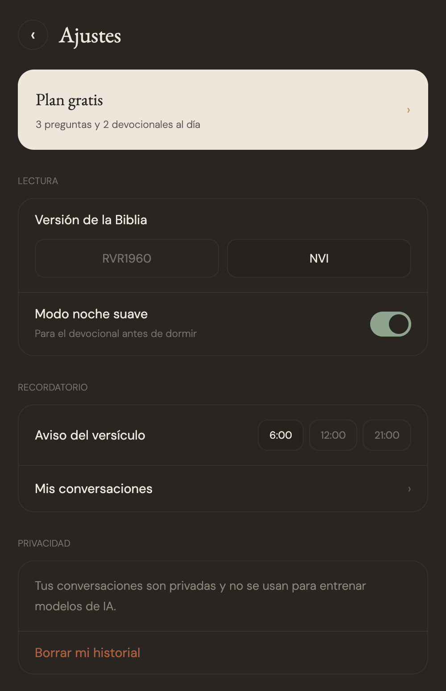
36-ajustes-nvi-noche.png - 3Entrar como ProSe ve: La tarjeta cambia a «Pro activo · Sin límites de preguntas ni conversaciones».
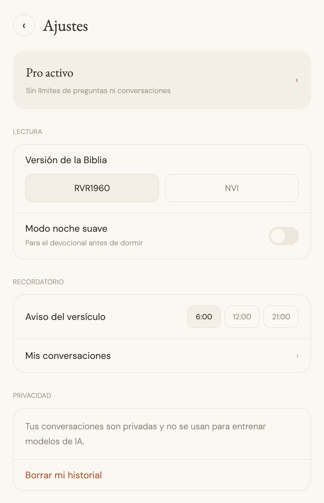
41-ajustes-pro.png - 4Abrir «Mis conversaciones»Se ve: Lista con avatar, título, preview y «Hoy / Ayer / 20 ago».A6 — ninguna fila es tocable: es una lista de solo lectura, no se puede reabrir nada.
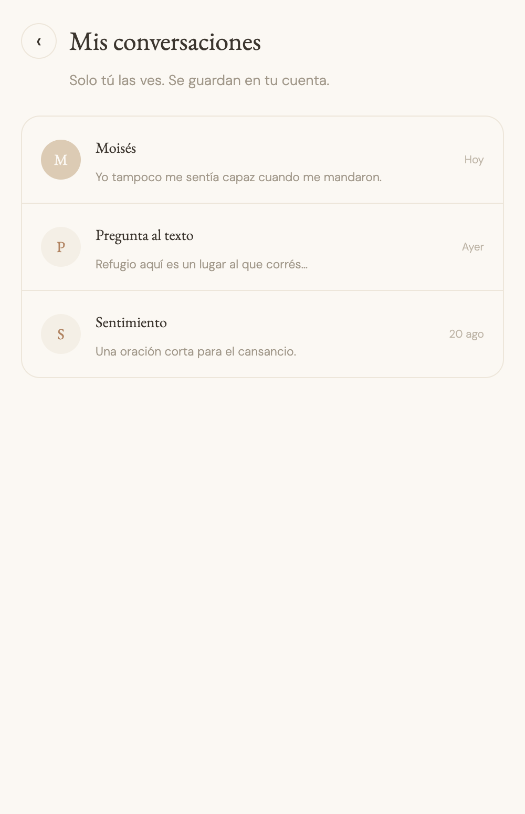
39-historial.png - 5Historial vacíoSe ve: Solo el título y el subtítulo. No hay estado vacío ni CTA.A6 — pantalla en blanco para todo usuario nuevo.
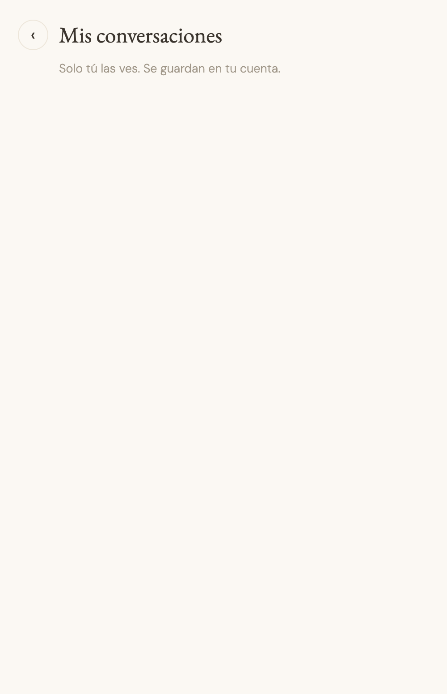
40-historial-vacio.png - 6Abrir el paywallSe ve: 4 beneficios, $4.99/mes, «Empezar con Pro», «Seguir en la versión gratis» y «Restaurar compras».M3 — «Cada vez que lo necesites, no dos al día» contradice el límite real de 3.
33-paywall.png - 7Tocar «Empezar con Pro» fuera de un development buildSe ve: «La compra se completa en un development build. Seguí en la versión gratis por ahora.» Comportamiento correcto de
revenuecat.ts.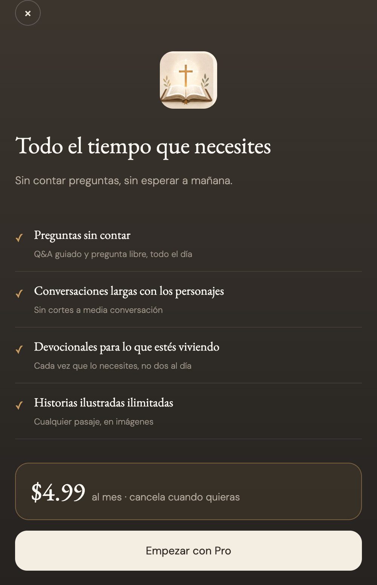
34-paywall-dev-build.png
{kind=link}
{kind=link}
{kind=link}
{kind=link}
{kind=link}
{kind=link}
Hallazgos
| ID | Sev. | Módulo | Qué pasa | Captura |
|---|---|---|---|---|
| A1 | Alto | Home / navegación | Con modo noche activo desaparecen los accesos a Q&A, Voces e Historias — y no hay barra de tabs que los reemplace El render de Home hace {dark ? <nightHint/> : <>«Acompañamiento» + grilla de módulos</>}, así que la grilla existe solo en tema claro. Como app/(tabs)/ no tiene _layout.tsx, no hay tab bar: Home es el único punto de entrada. Un usuario que enciende «Modo noche suave» pierde el acceso a 3 de los 4 módulos hasta que lo apague.app/(tabs)/home.tsx:187 · app/(tabs)/ sin _layout.tsx | 12 |
| A2 | Alto | Historias / cuotas | Historias salta directo al paywall en vez de mostrar la pantalla de límite compartidaif (!result.allowed) router.push("/paywall"). Los otros 3 módulos renderizan LimitReached. Rompe la regla dura #3 de CLAUDE.md y el objetivo del issue #32 («una sola pantalla de límite hacia el paywall, para los 4 módulos»).app/(tabs)/historias.tsx:41 | 33 |
| A3 | Alto | Q&A / cuotas | Q&A define su propia pantalla de límite en vez de usar LimitReached, y el copy divergeQaLimitScreen está declarada dentro de chat.tsx con su propio QA_LIMIT_BODY. Dice «Vuelven mañana a las 6:00 a.m.» y omite «y el devocional del día sigue abierto para ti», que sí aparece en limitCopy.ts y por tanto en Voces y Sentimiento. Tres módulos, dos textos, para el mismo momento.app/(tabs)/preguntar/chat.tsx:13-32 vs src/components/LimitReached.tsx + src/lib/limitCopy.ts | 20 vs 24 |
| A4 | Alto | Bundle / Convex | Módulos de servidor de Convex entran al bundle del cliente; Convex avisa que va a tirar error En cada arranque la app loguea: «Convex functions should not be imported in the browser. This will throw an error in future versions of convex.» La cadena es app/(tabs)/sentir.tsx → LimitReached → src/lib/limitCopy.ts → convex/quotas.ts → convex/devotional.ts. Lo mismo desde chat.tsx, que importa QUOTA_LIMITS directo de convex/quotas. Reproducible en cada carga; verificado en el overlay de error de Expo.src/lib/limitCopy.ts:1 · app/(tabs)/preguntar/chat.tsx:9 | consola |
| A5 | Alto | Ajustes / RAG | NVI es seleccionable pero no tiene corpus: el versículo del día queda sin texto y el selector de versículos, vacío Ajustes ofrece RVR1960 y NVI. Con NVI, rag/verses:citedForUser devuelve verse: null y listByChapter devuelve [] porque solo RVR1960 está ingerido. El resultado visible es una tarjeta de versículo sin versículo y un capítulo sin versículos. El PRD todavía lista la licencia de NVI como riesgo abierto (§riesgos y §próximos pasos).app/ajustes.tsx:12-15 · convex/rag/verses.ts:63-95 · PRD.md:150,172 | 37, 38 |
| A6 | Alto | Historial | El historial es una lista de solo lectura: las filas no son tocables y no hay estado vacío Cada ítem se renderiza como <View>, no como Pressable; en el árbol de accesibilidad el único elemento interactivo de la pantalla es el botón de volver. No se puede reabrir ninguna conversación desde ahí. Y cuando la lista está vacía no se renderiza nada: el usuario nuevo ve una pantalla en blanco bajo el título.app/historial.tsx:55, 49-86 | 39, 40 |
| M1 | Medio | Sentimiento | «Dame otro enfoque» no hace nada si el devocional se abrió desde el historialgenerateDevotional() sale temprano con if (!canGenerate || isGenerating) return;, y canGenerate es false porque al venir del historial no hay chips seleccionados ni texto libre. El botón no está deshabilitado ni muestra error: el tap se traga en silencio.app/(tabs)/sentir.tsx:79-82 · botón en :149 | 28 |
| M2 | Medio | Q&A + Voces | La pregunta enviada desaparece hasta que llega la respuesta (sin eco optimista)onSend limpia el input y espera a la action; el hilo solo se actualiza cuando el servidor responde. Durante esos segundos el usuario ve su texto borrado y únicamente «Buscando en el texto…» / «X está escribiendo…». En una respuesta lenta de LLM se lee como que el mensaje se perdió. Pasa igual en los dos módulos de chat.app/(tabs)/preguntar/chat.tsx:64-78 · app/(tabs)/voces/[slug].tsx:68-83 | 18, 23b |
| M3 | Medio | Ajustes + Paywall | Las cuotas escritas en el copy no coinciden con QUOTA_LIMITSAjustes dice «3 preguntas y 2 devocionales al día» y el paywall promete devocionales «cada vez que lo necesites, no dos al día». Los límites reales son qa: 5, voices: 5, feelings: 3, stories: 1. Los números están hardcodeados en el copy en vez de derivarse de la constante. app/ajustes.tsx:55 · src/lib/paywallCopy.ts:4 vs convex/quotas.ts:18 | 35, 33 |
| M4 | Medio | Historias | Una escena cuya ilustración falló se muestra igual que una pendiente, y no hay reintentoresolveSceneImage colapsa failed en unavailable, y el panel dice «Ilustración aún no disponible / Aparecerá aquí cuando la generación esté lista». Para una generación definitivamente fallida ese texto es falso: no va a aparecer, y el usuario no tiene forma de volver a intentar.src/features/stories/storyViewer.ts:13-21 · src/features/stories/StoryPanels.tsx:48-55 | 32 |
| M5 | Medio | Ajustes | No hay cerrar sesión en ninguna parte de la app Ajustes tiene plan, lectura, recordatorio y privacidad, pero ninguna acción de cerrar sesión ni de borrar la cuenta. Una vez autenticado no hay salida desde la UI. Para App Store, borrar cuenta suele ser requisito de review cuando la app permite crearla. app/ajustes.tsx (pantalla completa) | 35 |
| M6 | Medio | Voces | Los personajes no tienen el avatar ilustrado que pide el PRD El PRD §4.3 especifica «cada uno con un avatar/ilustración visual propio en el chat». Lo que hay es un círculo con degradé y la inicial del nombre, tanto en la lista como en el encabezado del chat. app/(tabs)/voces.tsx:31-36 · app/(tabs)/voces/[slug].tsx:96-99 · PRD.md:44 | 21, 22 |
| M7 | Medio | Sentimiento / Historias | Referencias a Convex sin tipar donde el api generado ya alcanzaSentimiento arma feelings:generate y history:getById con makeFunctionReference y strings a mano; Historias hace api as unknown as StoriesApi con el comentario de que «Convex no puede regenerar api en este worktree». Pero convex/_generated/api.d.ts sí incluye feelings y stories: el escape ya no hace falta y lo único que logra es apagar el chequeo de tipos entre cliente y servidor. Un rename en el backend no rompe la compilación, rompe en runtime.app/(tabs)/sentir.tsx:38,44 · src/features/stories/contracts.ts:20 · convex/_generated/api.d.ts:14,27 | — |
| M8 | Medio | Compartir | El texto que se comparte del devocional dice RVR1960 aunque el usuario tenga NVIbuildDevotionalShareText interpola la versión como literal. Q&A sí usa citation.version. Si el usuario eligió NVI, comparte una atribución equivocada.src/features/home/shareDevotional.ts:7 | 11 |
| B1 | Bajo | Q&A | Los 66 libros son una sola lista sin buscador ni separación Antiguo/Nuevo Testamento Llegar a Apocalipsis exige recorrer 66 filas. Además el atajo «Prefiero preguntar directo, sin elegir pasaje» está debajo de toda la lista, donde casi nadie va a llegar. app/(tabs)/preguntar.tsx:60-84 | 14 |
| B2 | Bajo | Q&A | La grilla de capítulos no dice de qué libro es El encabezado es «Elige un capítulo» a secas. En Salmos son 150 celdas numéricas sin ninguna referencia al libro elegido. app/(tabs)/preguntar.tsx:55-57 | 15 |
| B3 | Bajo | Voces | La pantalla de personaje inexistente está sin layout «Ese personaje no está en Voces.» sale pegada a la esquina superior izquierda, sin padding ni AppScreen, y el «Volver» es texto plano. Contrasta con el ViewerState de Historias, que sí está construido con los componentes del sistema.app/(tabs)/voces/[slug].tsx:51-59 | 44 |
| B4 | Bajo | Voces | La lista de personajes no tiene estado de cargacharacters?.map(...) simplemente no renderiza nada mientras la query está pendiente. Historias sí muestra «Cargando historias…».app/(tabs)/voces.tsx:24 | 47 |
| B5 | Bajo | Voces | El chat de Voces no muestra el contador de cuota Q&A muestra «4 de 5 preguntas gratis hoy» y Sentimiento «2 DE 3 DEVOCIONALES GRATIS HOY». Voces consulta quotas.remaining pero nunca lo pinta: el usuario choca con el límite sin aviso previo.app/(tabs)/voces/[slug].tsx:31 (query sin render) | 22 |
| B6 | Bajo | Voces | El saludo enlatado del personaje ya ofrece «Compartir esta respuesta» Cuando el hilo está vacío se inyecta character.first desde el catálogo y se renderiza con el botón de compartir, así que se puede compartir como «respuesta» un texto que la IA nunca generó.app/(tabs)/voces/[slug].tsx:47, 115-141 | 22 |
| B7 | Bajo | Home | En estado de error la tarjeta sigue diciendo «Leer el devocional de hoy» El cuerpo cambia a «No pudimos preparar tu lectura. Tocá para intentarlo de nuevo» pero la línea inferior, que es la que anuncia la acción, no cambia a «Reintentar». app/(tabs)/home.tsx:143-145 | 13 |
| B8 | Bajo | Copy (toda la app) | Voseo y tuteo mezclados entre pantallas Conviven «Revisá tu correo / Escribí el código / Preguntá lo que quieras / Contame qué llevás encima» con «Elige un libro / Escribe tu pregunta / ¿Qué llevas encima hoy? / Escoge lo que más se parezca». A veces en la misma pantalla. app/(auth)/email.tsx · app/(tabs)/preguntar.tsx · app/(tabs)/sentir.tsx · app/(tabs)/home.tsx | 04, 14, 25 |
| B9 | Bajo | Ajustes | En modo noche la tarjeta «Plan gratis» se invierte y parece la tarjeta destacada de Pro El fondo es isPro ? surfaceSunk : ink. En tema oscuro ink es claro, así que el plan gratis queda como un bloque crema resaltado y Pro quedaría apagado: la jerarquía visual se invierte respecto al tema claro.app/ajustes.tsx:44-46 | 36 |
| B10 | Bajo | Historias | El catálogo es de 5 historias fijas, pero el paywall promete «cualquier pasaje, en imágenes»STORY_CATALOG tiene 5 entradas de 4 escenas cada una. El beneficio Pro del paywall dice «Historias ilustradas ilimitadas — cualquier pasaje, en imágenes». Con lo que hay hoy, pagar da 5 historias, no cualquier pasaje.convex/stories.ts:40 · src/lib/paywallCopy.ts:5 | 30, 33 |
| B11 | Bajo | Sentimiento | La pantalla de generación no tiene spinner ni salida Solo texto estático. El botón de volver desaparece mientras isGenerating, así que si la action tarda o falla el usuario queda mirando una pantalla sin controles.app/(tabs)/sentir.tsx:104-114 | 26 |
| B12 | Bajo | Historias | Catálogo sin miniaturas, sin cuota visible y sin botón de volver La miniatura es un rectángulo gris vacío. Tampoco muestra cuántas historias gratis quedan (a diferencia de Q&A y Sentimiento) y, como /voces, la pantalla no tiene botón de volver: se depende del gesto del sistema.app/(tabs)/historias.tsx:55, 17-24 | 30 |
| B13 | Bajo | Navegación | /voces y /historias no tienen botón de volver/preguntar, /sentir, /ajustes, /historial y las dos pantallas de chat sí lo tienen. Las dos listas de módulo, no. Con headerShown: false en el Stack, en Android queda solo el gesto/botón del sistema.app/(tabs)/voces.tsx · app/(tabs)/historias.tsx · app/_layout.tsx:31 | 21, 30 |
| B14 | Bajo | Compartir | El botón dice «Compartir por WhatsApp» pero abre el share sheet genéricoshareContent llama a Share.share({ message }) de React Native, que abre el selector del sistema con todas las apps. No es un bug funcional, pero el rótulo promete un destino concreto. Los otros módulos usan el rótulo neutro «Compartir esta respuesta / esta historia».src/lib/share.ts:15-19 · app/(tabs)/home.tsx:166 | 11 |
| B15 | Bajo | Sentimiento | El CTA deshabilitado se ve como un botón primario activo Sin sentimientos ni texto, «Prepárame un devocional» se pinta como un bloque gris sólido de ancho completo, con el mismo peso visual que el estado habilitado. Solo cambia el tono. app/(tabs)/sentir.tsx:207 · src/components/AppButton.tsx | 25 |
Lo que funciona bien
- La regla dura #2 se sostiene end-to-end.
/voces/jesusresponde «Ese personaje no está en Voces», el catálogo son 6 humanos y la lista lleva el aviso explícito de que de Dios, Jesús y el Espíritu Santo se habla en 3ra persona. Además hay una suite de tests adversariales (convex/voicesGuardrail.test.ts,convex/voicesPrompt.test.ts) en verde. - Compartir sí tiene un solo dueño. Los 4 módulos que comparten pasan por
src/lib/share.ts; nadie reimplementó su propia variante. Es exactamente lo que pide la regla dura #3, y contrasta con lo que pasó con las cuotas. - Toda respuesta de Q&A viene con cita verificable (libro, capítulo, versículo y versión) renderizada aparte del texto, como manda la regla dura #4.
- El sistema visual es consistente. Serif EB Garamond para títulos y versículos, DM Sans para el resto, y los colores/espaciados salen de
design/tokens.json. Las pantallas se parecen entre sí y al prototipo. - Los estados de carga y error del devocional del día están bien resueltos, con reintento tocando la tarjeta.
- El paywall degrada con elegancia fuera de un development build: explica por qué no se puede comprar en vez de fallar en silencio.
- El visor de historias distingue los tres estados de imagen (lista, generando, no disponible) y nunca presenta una ranura vacía como ilustración terminada.
- **175 tests en 31 archivos, todos en verde, y
tsc --noEmitsin errores.**
Qué no se pudo verificar en este pase
- Todo lo que depende de IA real. No hay
ANTHROPIC_API_KEYniVOYAGE_API_KEYen este worktree, así que la calidad de las respuestas de Q&A, Voces y Sentimiento, y la calidad/latencia de las ilustraciones de Historias, quedan sin probar. Las respuestas de las capturas son del harness. - El decremento real de las cuotas.
quotas:remainingen el harness es un fixture fijo: se verificó cómo se ve el estado agotado (?qa=limit), no la transacción de consumo. Eso sí está cubierto porconvex/quotas.test.ts. - Compra y restauración de RevenueCat. Requieren un development build; en navegador solo se llega hasta el mensaje
dev_build_required. - Notificaciones locales. En web
dailyReminderdevuelveunsupported; hay que probarlo en dispositivo. - El diálogo de «Borrar mi historial».
Alert.alertno existe en react-native-web, así que en el navegador no aparece. En iOS/Android sí; la mutationhistory:deleteAllestá cubierta por tests. - Comportamiento nativo específico:
KeyboardAvoidingViewen iOS, safe areas reales, gesto de volver en Android, y el share sheet del sistema.